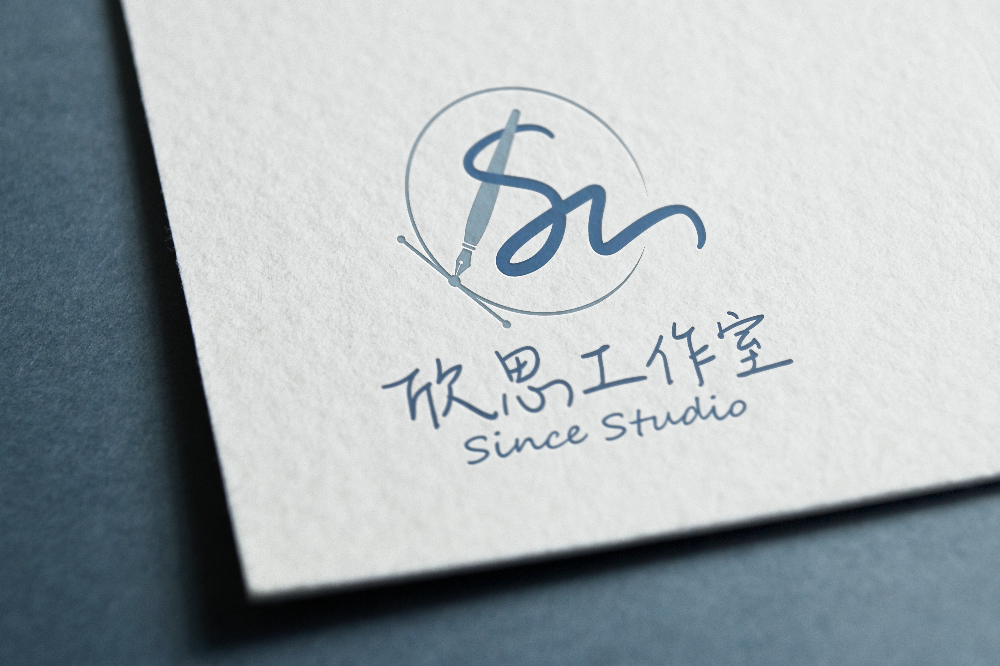

關於欣思

欣思工作室 Since Studio
是一間喜歡「欣賞」與「思考」的工作室，「Since」也代表起點，我們希望透過手寫與創作，讓每一份情感與故事，從「欣思」開始傳遞。
我們相信設計與創作不只是視覺美感，更是一種傳遞訊息與情感的語言。欣思專注於手寫字設計與客製化商品服務，透過文字與插畫，為你創作出美感與意義並存的專屬禮物。
是一間喜歡「欣賞」與「思考」的工作室，「Since」也代表起點，我們希望透過手寫與創作，讓每一份情感與故事，從「欣思」開始傳遞。
我們相信設計與創作不只是視覺美感，更是一種傳遞訊息與情感的語言。欣思專注於手寫字設計與客製化商品服務，透過文字與插畫，為你創作出美感與意義並存的專屬禮物。